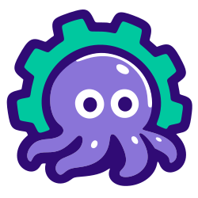
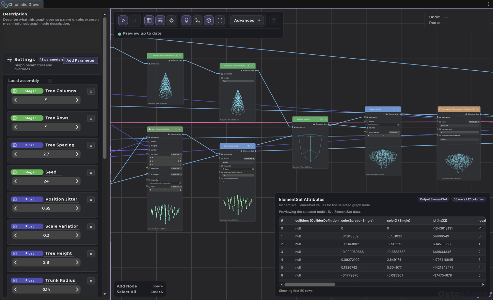
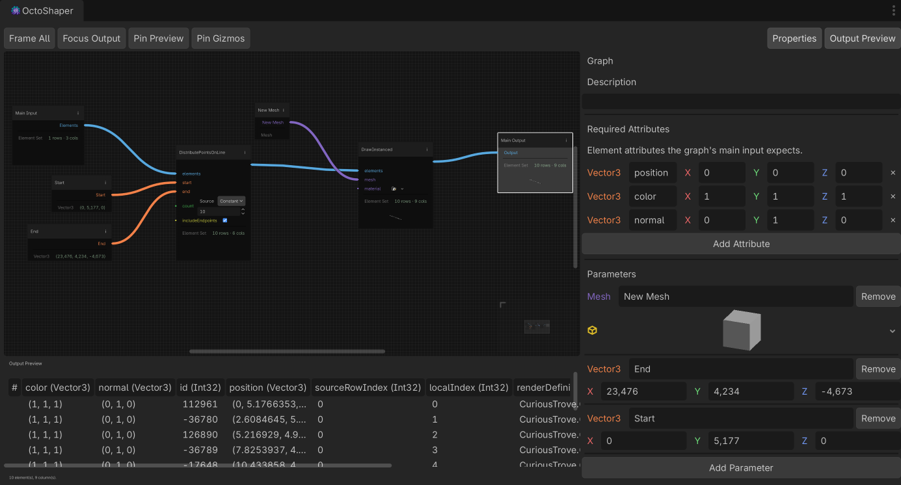

Modular layouts
Walls, towers and houses placed by the graph, while you control the overall shape.

Connect nodes, adjust parameters and see your level update in the editor. The same node graphs are coming to Godot.


200+ nodes in the box, from scattering to splines, meshes and physics queries.
Connect nodes, adjust parameters and see the result update in your scene. Every graph is a regular asset in your project.
Layouts, buildings, vegetation, splines and meshes, each generated by a graph.
Walls, towers and houses placed by the graph, while you control the overall shape.
Floors, windows and roofs from your own modular pieces, stacked by the graph.
Grass and small plants over large areas, drawn with GPU instancing.
Bridges, walls and paths: your meshes placed and instanced along a curve.
Points sampled on meshes and terrain, culled by slope, with props that sit on the ground.

Bezier paths live in the graph settings. Drag their handles in the Scene view and the graph follows.
Drop one graph into another like any node, preview included. Each copy gets its own parameter values.
Dates are targets, not promises. The devlog has the details.
The full Unity package, with a stable set of features and public docs.
ShippedProcedural meshes, colours, textures and per-instance material overrides.
ShippedMixed instancing and async GPU rendering, for scenes with a lot more stuff in them.
Up nextThe same node graphs, made for the Godot engine.
In developmentFollow along and be the first to hear when the Godot edition is ready.